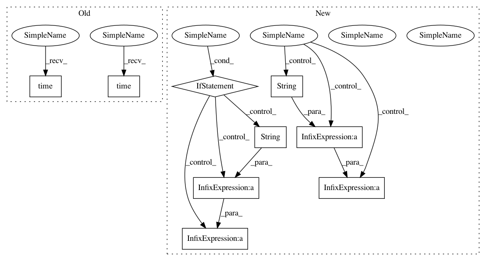

1f85614aa3601a75f2ba8e5a039bf6a62e64b49c,umap/umap_.py,,nearest_neighbors,#Any#Any#Any#Any#Any#Any#Any#,149
Before Change
The distances to the ``n_neighbors`` closest points in the dataset.
if verbose:
print(time.ctime(time.time()) + " Finding Nearest Neighbors")
if metric == "precomputed":
// Note that this does not support sparse distance matrices yet ...
// Compute indices of n nearest neighbors
knn_indices = np.argsort(X)[:, :n_neighbors]
// Compute the nearest neighbor distances
// (equivalent to np.sort(X)[:,:n_neighbors])
knn_dists = X[np.arange(X.shape[0])[:, None], knn_indices].copy()
rp_forest = []
else:
if callable(metric):
distance_func = metric
elif metric in dist.named_distances:
distance_func = dist.named_distances[metric]
else:
raise ValueError("Metric is neither callable, " + "nor a recognised string")
if metric in ("cosine", "correlation", "dice", "jaccard"):
angular = True
rng_state = random_state.randint(INT32_MIN, INT32_MAX, 3).astype(np.int64)
if scipy.sparse.isspmatrix_csr(X):
if metric in sparse.sparse_named_distances:
distance_func = sparse.sparse_named_distances[metric]
if metric in sparse.sparse_need_n_features:
metric_kwds["n_features"] = X.shape[1]
else:
raise ValueError(
"Metric {} not supported for sparse " + "data".format(metric)
)
metric_nn_descent = sparse.make_sparse_nn_descent(
distance_func, tuple(metric_kwds.values())
)
// TODO: Hacked values for now
n_trees = 5 + int(round((X.shape[0]) ** 0.5 / 20.0))
n_iters = max(5, int(round(np.log2(X.shape[0]))))
rp_forest = make_forest(X, n_neighbors, n_trees, rng_state, angular)
leaf_array = rptree_leaf_array(rp_forest)
knn_indices, knn_dists = metric_nn_descent(
X.indices,
X.indptr,
X.data,
X.shape[0],
n_neighbors,
rng_state,
max_candidates=60,
rp_tree_init=True,
leaf_array=leaf_array,
n_iters=n_iters,
verbose=verbose,
)
else:
metric_nn_descent = make_nn_descent(
distance_func, tuple(metric_kwds.values())
)
// TODO: Hacked values for now
n_trees = 5 + int(round((X.shape[0]) ** 0.5 / 20.0))
n_iters = max(5, int(round(np.log2(X.shape[0]))))
rp_forest = make_forest(X, n_neighbors, n_trees, rng_state, angular)
leaf_array = rptree_leaf_array(rp_forest)
knn_indices, knn_dists = metric_nn_descent(
X,
n_neighbors,
rng_state,
max_candidates=60,
rp_tree_init=True,
leaf_array=leaf_array,
n_iters=n_iters,
verbose=verbose,
)
if np.any(knn_indices < 0):
warn(
"Failed to correctly find n_neighbors for some samples."
"Results may be less than ideal. Try re-running with"
"different parameters."
)
if verbose:
print(time.ctime(time.time()) + " Finished Nearest Neighbor Search")
return knn_indices, knn_dists, rp_forest
After Change
rp_forest = make_forest(X, n_neighbors, n_trees, rng_state, angular)
leaf_array = rptree_leaf_array(rp_forest)
if verbose:
print(ts() + "Commencing NN descent for " + str(n_iters) + " iterations")
knn_indices, knn_dists = metric_nn_descent(
X.indices,
X.indptr,
X.data,
X.shape[0],
n_neighbors,
rng_state,
max_candidates=60,
rp_tree_init=True,
leaf_array=leaf_array,
n_iters=n_iters,
verbose=verbose,
)
else:
metric_nn_descent = make_nn_descent(
distance_func, tuple(metric_kwds.values())
)
// TODO: Hacked values for now
n_trees = 5 + int(round((X.shape[0]) ** 0.5 / 20.0))
n_iters = max(5, int(round(np.log2(X.shape[0]))))
if verbose:
print(ts() + "Building RP forest with " + str(n_trees) + " trees")
rp_forest = make_forest(X, n_neighbors, n_trees, rng_state, angular)
leaf_array = rptree_leaf_array(rp_forest)
if verbose:
print(ts() + "Commencing NN descent for " + str(n_iters) + " iterations")
In pattern: SUPERPATTERN
Frequency: 3
Non-data size: 9
Instances
Project Name: lmcinnes/umap
Commit Name: 1f85614aa3601a75f2ba8e5a039bf6a62e64b49c
Time: 2019-04-19
Author: jlmelville@gmail.com
File Name: umap/umap_.py
Class Name:
Method Name: nearest_neighbors
Project Name: lmcinnes/umap
Commit Name: 1f85614aa3601a75f2ba8e5a039bf6a62e64b49c
Time: 2019-04-19
Author: jlmelville@gmail.com
File Name: umap/umap_.py
Class Name:
Method Name: nearest_neighbors
Project Name: lmcinnes/umap
Commit Name: 40966e92729881bbfb107aad5b5f0dd6ae571e0d
Time: 2019-04-19
Author: jlmelville@gmail.com
File Name: umap/umap_.py
Class Name:
Method Name: nearest_neighbors
Project Name: AxeldeRomblay/MLBox
Commit Name: 8768184ae39b420292acc25eda9ae43c3af0752d
Time: 2017-06-20
Author: axelderomblay@gmail.com
File Name: python-package/mlbox/model/supervised/regression/stacking_regressor.py
Class Name: StackingRegressor
Method Name: fit_transform